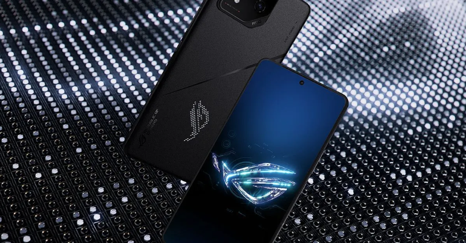

ASUS lança ROG Phone 8, nova linha de celulares gamers; veja preços
Postado 04 outubro 2024

Aparelhos traz função de inteligência artificial que joga sozinha para o usuário enquanto está em segundo plano
Nesta terça-feira (7) a ASUS anunciou seu novo produto focado no público gamer, a linha de celulares ROG Phone 8. Os aparelhos são equipados com dispositivos preparados para suportar muitas horas de jogos, como um sistema de resfriamento e duas portas USB-C, permitindo o carregamento durante as partidas.
De acordo com a marca, os smartphones da linha Republic of Gamer (ROG) foram projetados para jogadores de alto desempenho. Em destaque nos lançamentos fica as duas câmeras traseiras e o painel de LED na parte traseira do celular, que pode exibir animações customizadas.
Usando inteligência artificial, o Modo Segundo Plano permite que o usuário faça outras atividades enquanto o ROG 8 joga sozinho, por meio de comandos pré-programados. Além disso, ele vem equipado com o X-Sense, sistema que adiciona recursos como aceleração da fala dos personagens e coleta automática de itens durante as partidas.
No que diz respeito às câmeras, a parte traseira vem com uma lente teleobjetiva de 32MP que, de acordo com a empresa, permite um zoom de até 30x, e outra ultrawide (grande angular) de 13 MP. A frontal tem 32MP com um campo de visão de 90°.
A tela de Mini-LED localizada na parte traseira do aparelho está nas versões ROG Phone 8 Pro e ROG Phone 8 Pro Edition e é personalizável, permitindo a exibição de animações feitas pelo usuário.
Os ROG Phone 8 Pro e Pro Edition chegam nesta terça-feira (7) na loja da ASUS com preços a partir de R$ 9.999.
Voltar